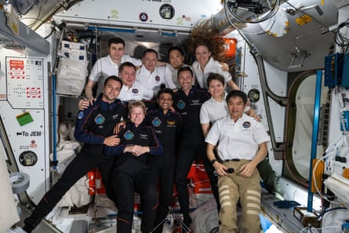
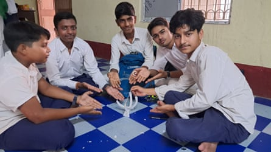
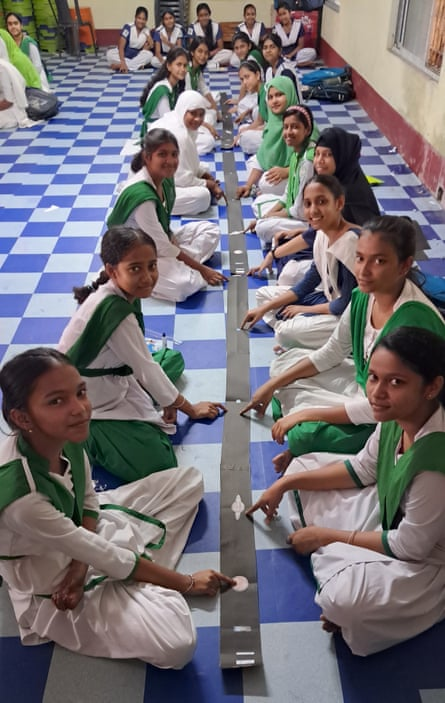

A s the International Space Station passes over India this weekend, many of those looking up to catch a glimpse as it goes by will be excited schoolchildren, who, like millions across the country, have their eyes, hopes and dreams pinned on astronaut Shubhanshu Shukla, the first Indian to visit the ISS.
“What if the astronauts find evidence of intelligent life forms in space? Or even better, what if Shubhanshu Shukla’s experiments help humans discover a way to survive on other planets?” says Deborshi Halder, an excited 15-year-old. His classmate, however, is concerned. “But if places beyond Earth become habitable, we humans may land up exploiting them too, leading to space pollution,” says Sabnam Sireen.
Shukla, an Indian air force test pilot, engineer and ISRO (Indian Space Research Organisation) astronaut, is serving as a pilot on Axiom Mission 4. Shux as he is referred to by his colleagues, is only the second Indian to travel to orbit, after Rakesh Sharma made that leap in 1984.
Shubhanshu Shukla (front row, third from left) with the Axiom Mission 4 and Expedition 73 crews inside the Harmony module of the International Space Station, 26 June.Photograph: Nasa Photo/Alamy
The ISS is expected to be visible from India on Saturday night , if the skies stay clear.
Deborshi and Sabnam are both standard grade 10 (year 11) students of Kalash high school, a government-sponsored school in West Bengal, and like their classmates they are naturally in awe of the astronaut. While the news steers their conversations, they credit their nuanced understanding of the planetary environments to a recent workshop on space science, courtesy of Life-To and Beyond Foundation. The non-profit, set up in 2022, is the brainchild of science communicator Sibsankar Palit. The organisation has a scientific research and development wing and an arm dedicated to promoting science literacy.
Over the past three years, the NGO has conducted more than 30 educational workshops on space science for students. More than half have taken place at primary and secondary schools across India, including in remote forest and tribal areas, such as in Sukma, in Chhattisgarh, a state affected by Maoist insurgency movements.
Students of Kalash high school in West Bengal have been inspired by Indian astronaut Shubhanshu Shukla’s trip to the International Space Station.Photograph: Courtesy of Saikat Ganguly and Sibsankar Palit
“We can’t rely on textbooks alone, kids need something interactive to spark their curiosity,” says Palit. But laboratory equipment can be expensive and many students do not have access to tools such as miniature spacecraft or solar system models. Only 53.6% of India’s 276,840 secondary schools had integrated science labs in 2021-22.
Palit has learned to improvise. At a recent workshop at Kalash high school, students sat cross-legged on the floor while he helped them create a paper orrery and model of a spacecraft. While the school has a modest laboratory, teacher Saikat Ganguly was looking for other ways to increase students’ interest in astronomy.
Science workshops have given pupils at Kalash high school a better understanding of the solar system and space.Photograph: Courtesy of Saikat Ganguly and Sibsankar Palit
Fardin Ahmed, a 14-year-old student at Kalash who attended the workshop and now has his own model of the solar system, says: “I learned about the solar system from books. But I didn’t give much thought to the size of the universe. I now realise that we, sitting here in this small district, in India, on Earth, are a part of a vast, infinite galaxy.”
Imrana Rahaman and Labiba Naaz, both 15, are thrilled to learn that the ISS will be visible on certain nights and the two girls are hoping to catch a glimpse of it and wave to their hero. A few years ago, a science teacher introduced them to a planetarium app. The girls don’t own mobile phones, but downloaded the app on to their parents’ phones.
Ganguly says: “Ever since, the duo have been using mobile technology to study the night sky. Now they are using an app to track the ISS and astronaut Shukla’s exact location in the skies in real time.”
Most of the students at Kalash come from surrounding villages and small towns. Many are first-generation learners from low-income families. Palit finds that many students, particularly those who are not from the big cities, think that a career in the sciences is beyond their reach.
“But that’s when I remind them that India’s space programme was born in a village,” he says, explaining that India’s first rocket was launched from a sleepy fishing village, Thumba, in Kerala, back in 1963.